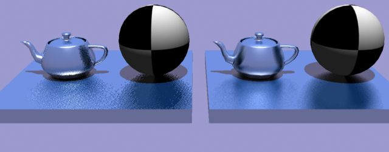
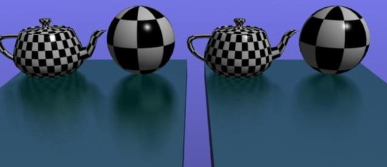
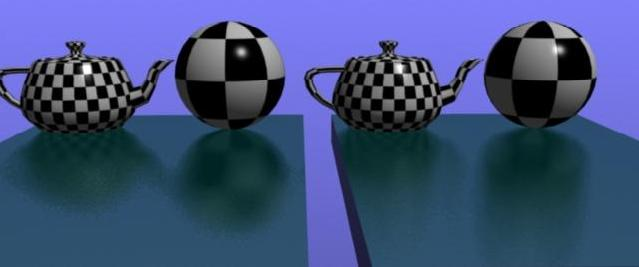
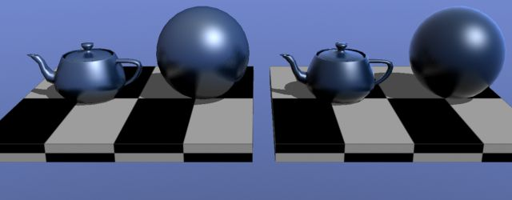
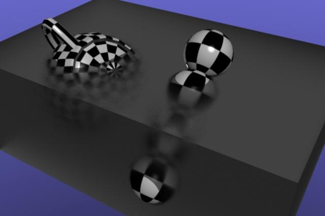
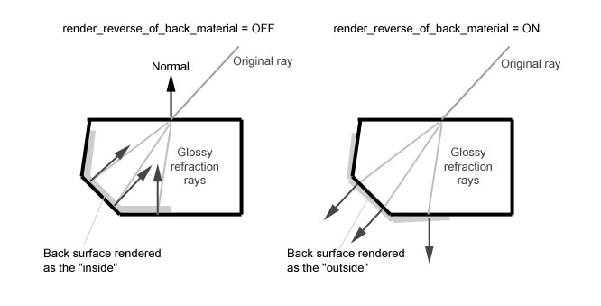

Ray Tracing
Reflection
Cast a reflection ray of a given color and merge the result
with an input color. This can be used to add a reflection effect
to a base shader that provides illumination, possibly in
conjunction with refractions or transparency added by other base
shaders. If no reflection ray can be cast (because the trace
depth has been exceeded, or the reflection ray caused a shader to
be called that failed, or the notrace parameter is set),
sample the environment if there is one.
mib_reflect
color "mib_reflect" (
color "input",
color "reflect",
boolean "notrace")
- input
- is the color to composite the reflection
onto.
- reflect
- is an RGBA color that blends the reflection
onto the input. Transparent black returns the input color without
casting a reflected ray; opaque white returns the reflection
color without evaluating the input color.
- notrace
- if set to true, prevents the shader from
casting a reflection ray and samples the environment instead.
Refraction
Cast a refraction ray of a given color with an index of
refraction, and merge the result with an input color. The indices
of refraction can be computed with another base shader, such as
mib_refraction_index, which is also stored back into the
appropriate state variables. This can be used to add a refraction
effect to a base shader that provides illumination.
mib_refract
color "mib_refract" (
color "input",
color "refract",
scalar "ior")
- input
- is the color to composite the refraction onto.
- refract
- is an RGBA color that blends the refraction
onto the input. Transparent black returns the input color without
casting a refracted ray; opaque white returns the refraction
color without evaluating the input color.
- ior
- is the ratio of the indices of refractions; the
index of the object being entered divided by the index of the
object being exited. This controls the outgoing ray direction. If
it is 0, 1 is used, which reduces refractivity to transparency.
Transparency
Cast a transparency ray of a given color and merge the result
with an input color. This is like the previous function assuming
an index of refraction of 1.
mib_transparency
color "mib_transparency" (
color "input",
color "transp")
- input
- is the color to composite the refraction onto.
- transp
- is an RGBA color that blends the transmission
onto the input. Transparent black returns the input color without
casting a transparency ray; opaque white returns the transparency
color without evaluating the input color.
Continue
Continue a ray of a given color and merge the result with an
input color. The purpose is to continue a ray as if the current
intersection did not exist. Trace depth, ray type and distance
for volume computations are not modified. A typical use is for
walls of a showroom where the camera sits outside, so that the
room walls must be ignored.
mib_continue
color "mib_continue" (
color "input",
color "transp")
- input
- is the color to composite the continued ray
onto.
- transp
- is an RGBA color that blends the transmission
onto the input. Transparent black returns the input color without
casting a ray; opaque white returns the transparency color
without evaluating the input color.
Opacity
Cast a transparency ray of a given intensity and merge the
result with an input color. This is like the previous function,
except that the opacity is given instead of the transparency.
Opacity is defined as 1.0 - transparency.
mib_opacity
color "mib_opacity" (
color "input",
color "opacity")
- input
- is the color to composite the refraction onto.
- opacity
- is an RGBA color that blends the transmission
onto the input. Opaque white returns the input color without
casting a transparency ray; transparent black returns the
transparency color without evaluating the input color.
Dielectric
Another variation of refraction, with the addition of
specularity (Snell's law). This shader does only the refraction
part of a dielectric material; highlights are left to other
illumination nodes.
mib_dielectric
color "mib_dielectric" (
color "input",
color "absorb",
scalar "refract",
scalar "ior")
- input
- is the color to composite the refraction onto.
- absorb
- specifies the outside absorption coefficients of
the surface.
- refract
- blends the refraction onto the input. A value
of 0.0 returns the input color without casting a refracted ray; a
value of 1.0 returns the refraction color without evaluating the
input color.
- ior
- is the ratio of the indices of refractions; the
index of the object being entered divided by the index of the
object being exited. This controls the outgoing ray direction. If
it is 0.0, 1.0 is used, which reduces refractivity to
transparency.
Volume Fog
This is a simple fog shader. The shader operates on the result color provided
by a previously running shader, typically from a material shader at the far end
of the ray, and fades it toward a fog color based on ray length. Fading occurs
within a maximum distance, otherwise the fog color is considered solid. The
fog color is allowed to have an alpha value which limits the maximum opacity
of the fog. Attaching the fog color to a texture shader, for example, allows
transparent volume effects such as smoke or fire (set max to 0 to avoid fading).
mib_volume
color "mib_volume" (
color "color",
scalar "max",
boolean "lightrays")
- color
- the fog color. The resulting color of the shader is faded
towards this color based on the travelled ray length.
- max
- is the maximum internal space distance where fading should occur.
Beyond this distance the fog is considered solid.
- lightrays
- if true the shader also applies to light rays, otherwise
it does no operation on light rays. This option should be enabled for correct
results but is expensive if the number of light rays is very large.
Ray Marcher
The ray marcher casts light rays from points on a given ray,
and approximates the volumetric contribution from light sources
sending light through the volume. Instead of using shader
interface functions like mi_sample_light, it calls a
shader given as an input parameter of type shader. Ray
marching consists of calling the shader for regular points
between the start point and end point of the ray, and adaptively
subdividing each of these intervals until a given subdivision
limit is reached if the color returned by two adjacent shader
calls is smaller than a given contrast threshold. The total
weighted sum is returned.
mib_ray_marcher
color "mib_ray_marcher" (
shader "shader",
scalar "distance",
integer "num",
integer "subdiv",
color "contrast")
- shader
- is the shader to call at every sampling point.
Its returned color is added to the returned total unless the
shader fails (returns false).
- distance
- is the maximum internal space distance between
two initial sample points. If the distance is 0, no maximum
distance is enforced.
- num
- is the initial number of samples in the given
distance. If this number is 0, no initial number is given, and
the ray marcher relies on the minimum distance instead. If both
are 0, the default number is 4. If the number is not 0, it must
be at least 2 (one at each ray end point).
- subdiv
- specifies the number of recursive subdivisions
of the initial sample density. A value of 0 (the default) does
not subdivide, so the ray marcher is restricted to the initial
sample points. Values of 1 or larger make the sampling adaptive;
each level of subdivision divides a distance by two. The maximum
is 16.
- contrast
- if exceeded by the absolute difference
between two adjacent samples, causes another sample to be taken
in the middle. The process then repeats recursively for both
sub-segments until the contrast is sufficiently low or the
subdivision limit is reached.
Two-Sided
Choose one or the other input color, depending on which side
of the geometry was hit. This is commonly used as a multiplexing
material shader, with two other material shaders assigned to the
front and back parameters.
mib_twosided
color "mib_twosided" (
color "front",
color "back")
- front
- is returned if the front side was hit.
- back
- is returned if the back side was hit.
Refraction Index
Decide whether the ray is entering or leaving the object it
has hit, based on a scan of parent rays (not based on the normal
vector; this can be unreliable if the scene contains dubious
geometry such as cones with only one axis-aligned normal at the
tip). The index of refraction ratio (outgoing divided by
incoming) is returned. As a side effect, both incoming and
outgoing indices of refraction are stored in the state
(ior_in and ior, respectively), and the current
volume shader becomes the refraction volume if the ray is
entering.
mib_refraction_index
struct {
scalar "ior",
boolean "enter"
} "mib_refraction_index" (
scalar "mtl_ior")
- ior
- is the returned refraction index ratio, ready for
use by refracting or dielectric base shaders.
- enter
- is true if the ray is entering the object. Most
shaders do not need to know this but it makes this base shader
more versatile.
- mtl_ior
- is the index of refraction of the material that
the ray has hit. It describes the optical properties of the
object the ray is entering or leaving, and is returned as the new
index of refraction if the ray is found to be entering the
object.
Glossiness
The shaders described in this section are a way to generate glossy (blurred)
reflections and refractions. The following points illustrate the
performance and usability differences between these shaders and
the physics DGS shaders:
- Multi-sampled glossiness (vs. single samples)
- Distance-bounded reflections/refractions
- Undersampling of environment
- Anisotropy without need for explicit UV vectors
(vs. derivative vectors required)
- Normal-vector perturbing (vs. direction-vector-perturbing).
- Fresnel effect
- Chromatic abberations
Multi-sampled glossiness
The DGS shaders shoot a single glossy ray for reflection and refraction, relying
on the oversampling of the entire image (with the associated performance penalty)
to average out the samples for an attractive blur.
Every ray is a new independent sample.
In contrast, the mib_glossy_* shaders take multiple glossy ray samples,
causing oversampling only on the glossy surfaces rather than the
whole image. Samples are created using mental ray's strictly deterministic sampling
engine and is hence able to create a more attractive sample pattern yielding a
"better looking" blur with the same number of samples.

DGS (left) vs. mib_glossy_reflection (right)
The image above is rendered with samples 0 1 and one can clearly see the
grainy result on the left. To get a smooth result one would need to increase the
sampling of the entire image. In contrast, mib_glossy_* handles
it's own oversampling (in the example, 8 samples) and applies it only on the glossy
surfaces themselves.
Distance bounded reflections/refractions
While strictly non-physical in the case of reflections, the mib_glossy_*
shaders allow one to limit the reach of both reflected and refracted rays. This helps
eliminate image noise caused by distant reflected/refracted objects, and
can vastly improve performance.

Unlimited reflections (left) vs. distance limited (right)
Undersampling of environment
One of the goals of the mib_glossy_* shaders is to avoid distant image
noise by filtering out distant objects and replacing with a material (in the case
of refraction) or the environment (in the case of reflection). But to avoid
excessive noise from sampling said environment, the reflection shader can
intentionally single-sample the environment (and can even be passed an explicit
pre-blurred environment) to remove noise.
Anisotropy without need for explicit UV vectors
The shaders can use explicitly-passed UV vectors for anisotropic glossy
reflections/refractions, but will attempt to calculate sensible vectors
themselves if these are missing (set to 0,0,0).
Normal vector perturbing
The DGS shaders calculate a specular reflected or refracted direction,
and then perturb this direction within the range determined by the
shiny parameter. In contrast, the mib_glossy_*
shaders simulate glossiness as if the microfaceting is in the surface
before the reflection or refraction.. This means the reflected and refracted
directions are calculated by actually perturbing the normal vector (simulating
a rough surface on a microscopic level), and calculating the new reflected
or refracted direction based on the changed normal.
It is notable that this yields different results and makes the glossiness
view direction dependent. As an example, the glossiness pattern of reflections
in a floor will be stretched vertically. This is the same effect one can see
at a sunset over water, when the reflection of the sun seems stretched vertically
into a long streak of sunlight.

DGS shader (left) vs. mib_glossy_reflection (right)
Fresnel effect
Most reflective materials reflect more at glancing angles, and transparent
materials transmit more at facing angles. This re-balancing between
reflectance and transmittance is known as a "fresnel effect". These shaders
allow different weights to be set for "edges" (glancing angles) and "base"
(facing angles) to emulate this effect. In the mib_glossy_*
shaders, this effect is calculated per sample instead of as a
global weighting of the entire reflection for greater realism.

No fresnel effect (left) vs. Exaggerated fresnel effect (right)
Notice how the edges (surfaces at a glancing angle) in the right image
reflect more than in the left image.
Chromatic aberration
The mib_glossy_* shaders have a dispersion
parameter, which sets the amount of "faux chromatic aberration". The
effect is not physically correct and only an emulation of
the real phenomena.
Glossy Reflection
This is the shader for glossy reflection. It adds glossy reflection
to a base material connected to the shader.
mib_glossy_reflection
color "mib_glossy_reflection" (
shader "base_material",
color "reflection_color",
scalar "max_distance",
scalar "falloff" default 2.0,
color "environment_color",
scalar "reflection_base_weight" default 0.2,
scalar "reflection_edge_weight" default 1.0,
scalar "edge_factor" default 5.0,
shader "environment",
boolean "single_env_sample" default true,
integer "samples" default 16,
scalar "u_spread" default 0.5,
scalar "v_spread" default 0.5,
vector "u_axis",
vector "v_axis",
scalar "dispersion" default 0.0,
array color "spectrum"
)
apply material, texture
version 3
- base_material
- is the base surface onto which the reflections
are added. One can, for example, apply
mib_illum_phong,
or any other surface shader, here.
- reflection_color
- defines the reflection strength (and coloration).
The calculated reflections are simply multiplied by this value.
- max_distance
- if set to zero, the reach of the reflection rays are
infinite. For values greater than zero, the reach of the reflection rays
are limited to this distance (with a huge performance gain), and the color
of the reflection is faded toward the environment color as the length
of the ray approaches this distance.
Use this parameter to improve performance and to avoid excessive noise
due to distant high-contrast objects.
- fallof
- sets the rate for fading into the environment, which is a
power function. The default of 2.0 means the falloff is by distance squared;
3.0 means distance cubed, and so on. This parameter has no effect if
max_distance is zero.
- environment_color
- is the multiplier for when the ray misses any
object and hits the environment. For physical accuracy, this should be
exactly the same as the reflection_color, but is provided
separately to give greater control in balancing the brightness between
reflection of objects and reflection of the environment.
- reflection_base_weight
- is a scalar multiplier for the reflection
at surfaces facing the camera, and reflection_edge_weight at
surfaces perpendicular to the camera (i.e. edges), and
edge_factor the narrowness of this "edge". Generally there are
more reflections at edges (glancing angles) than on facing surfaces, known
as a "fresnel effect".
- environment
- parameter allows passing an explicit environment
shader that only applies to this shader. If none is passed, the
material's environment shader is used, with the global camera environment
as a fallback. This allows the use of a specially prepared pre-blurred
environment map for environment reflections.
-
If the environment map is already sufficiently blurry, it may be
wasteful (performance wise), and it may also introduce unnecessary sampling noise
when sampling the environment multiple times. When single_env_sample
is off, an environment sample is made for each reflection ray that misses an
object or needs to be mixed with the environment due to the use of
max_distance. When on, the environment is sampled only once
for these reflection rays.
- samples
- sets the number of samples used, and is ideally a power of
two. If zero, the shader reverts to single sample mirror reflection only.
- u_spread
v_spread - is the amount of normal
vector perturbation performed in the U and V direction. If these values
are identical, isotropic glossy reflection is generated. Upon any
difference between the two values, the anisotropic mode is enabled.
- u_axis
v_axis
- are optional parameters for specifying
the directions of anisotropy. These only apply in anisotropic mode.
If u_axis is 0,0,0 the shader attempts to generate a default vector
based on the first derivative vector of the surface, and if such is missing,
based on object-space X axis.
If u_axis is given a value it is utilized as the U direction of
anisotropy. If v_axis is also specified it is used as the V direction,
but if left unspecified the V direction is calculated as the cross product
of the original surface normal and the U direction.
- dispersion
- reaches from 0.0 (no chromatic aberration) to 1.0
(full spectrum chromatic abberation).
- spectrum
- is an array of colors defining the "rainbow" into
which colors are broken when the dispersion parameter is nonzero. It
defaults to a default red-yellow-white-cyan-blue-indigo colors but can be
anything.
Glossy Refraction
This shader is very similar to
mib_glossy_reflection
but has a few differences. Since it deals with refraction, it has a
"deep material" rather than an environment.

Fading towards a gray-ish "deep material"
mib_glossy_refraction
color "mib_glossy_refraction" (
shader "top_material",
shader "deep_material",
shader "back_material",
boolean "render_reverse_of_back_material",
color "refraction_color",
scalar "max_distance",
scalar "falloff" default 2.0,
scalar "refraction_base_weight" default 1.0,
scalar "refraction_edge_weight" default 0.2,
scalar "edge_factor" default 5.0,
scalar "ior" default 1.0,
integer "samples" default 16,
scalar "u_spread" default 0.5,
scalar "v_spread" default 0.5,
vector "u_axis",
vector "v_axis",
scalar "dispersion" default 0.0,
array color "spectrum"
)
apply material, texture
version 2
- top_material
- is the surface characteristics of the very top
layer. Like the base_material in the reflection version of this
shader, this is simply added to the result. An example use would be
mib_illum_phong
with only specularity and very little to no diffuse component.
- deep_material
- is only used if max_distance is
nonzero. It is the surface characteristics of the "interior" of the
object, and the color to which refractions fade as they reach the
max_distance. While the color is still calculated
at the surface, it will "appear" to be behind any refraction of
internal objects. For interesting pseudo-volumetric simulations
one can suggest using the misss_fast_* subsurface scattering
shader here.
- back_material
- is the material used for rays that hit
the inside of the object from within (i.e. any ray that hits the
object from the back as defined by the geometry normal). It defines
what the "inside" of the object looks like, and should just like
the preceeding parameters be assigned to a surface shader, e.g.
mib_illum_phong or similar.
By default mental ray flips the normal to the side of the incoming
ray, which would render the inside of the objects surface.
But sometimes it is desirable to simulate a translucency
effect by letting the light hitting the outside of the object
define its shading. This is accomplished by turning
render_reverse_of_back_material on, which causes the
shader to use the original direction of the surface normal when
evaluating back_material.

Simulating translucency by intentionally flipping the normal vectors
of the back material.
- refraction_color
- is simply a multiplier for the refracted
rays.
- max_distance
- limits the reach of refracted rays, and fades
them toward the deep_material as their length approaches the
max_distance. This gives the appearance of a
semi-transparent material into which one can only see so far.
- falloff
- sets the rate for fading into the deep_material,
which is a power function. The default of 2.0 means the falloff is by
distance squared; 3.0 means distance cubed, and so on. This parameter
has no effect if max_distance is zero.
- refraction_base_weight
- is a scalar multiplier for the refraction
at surfaces facing the camera, and refraction_edge_weight, at
surfaces perpendicular to the camera (i.e. edges).
edge_factor is the narrowness of this "edge". Generally, there is
less refraction at edges (glancing angles) than there is on facing surfaces.
This is known as a "fresnel effect".
- ior
- is the index of refraction. Since the perturbation of
refraction is calculated based on a perturbed normal vector, it is
very important that this value defines a sensible index of
refraction... otherwise an index of 1.0 causes no change in the ray
direction, generating no blurriness whatsoever!
As a special case, one may set ior to 0.0 which will switch
to a "direction perturbing mode" rather than a "normal perturbing
mode".
- samples
- sets the number of samples used, and is ideally a power of
two. If zero, the shader reverts to single sample refraction only.
- u_spread
v_spread - is the amount of normal
vector perturbation performed in the U and V direction. If these values
are identical, isotropic glossy refraction is generated. Upon any
difference between the two values, the anisotropic mode is enabled.
- u_axis
v_axis - are optional parameters for specifying
the directions of anisotropy. These only apply in anisotropic mode.
If u_axis is 0,0,0 the shader attempts to generate a default vector
based on the first derivative vector of the surface, and if such is missing,
based on object-space X axis.
If u_axis is given a value it is utilized as the U direction of
anisotropy. If v_axis is also specified it is used as the V direction,
but if left unspecified the V direction is calculated as the cross product
of the original surface normal and the U direction.
- dispersion
- parameter reaches from 0.0 (no chromatic aberration)
to 1.0 (full spectrum chromatic abberation).
- spectrum
- is an array of colors defining the "rainbow" into
which colors are broken when the dispersion parameter is nonzero. It
defaults to a default red-yellow-white-cyan-blue-indigo colors but can be
anything.
Copyright (©) 1986-2009 by
mental images GmbH